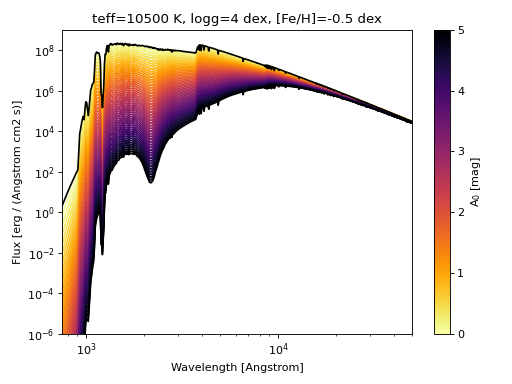
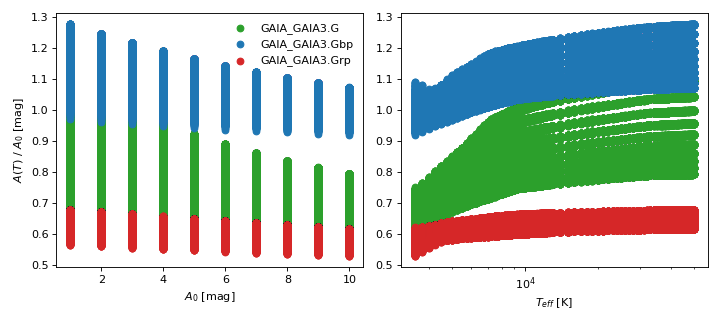
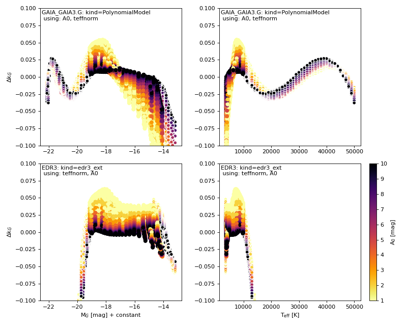

Welcome to dustapprox’s documentation!
Contents
Welcome to dustapprox’s documentation!#
This package is a set of tools to compute photometric extinction coefficients in a quick and dirty way.
Extinction coefficients per passbands depend on both the source spectral energy distribution and on the extinction itself (e.g., Gordon et al., 2016, Jordi et al., 2010 ). To first order, the shape of the SED through a given passband determine the mean photon wavelength and therefore the mean extinction through that passband. Of course in practice this also depends on the source spectral features in the passband and the dust properties.
We provide the methodology to compute approximation models of the extinction for a given passband as well as some precomputed models that are ready to use or integrate with larger projects.
We also detailed the various ingredients of the models in subsequent pages listed below
Details
Warning
This package provides approximations to the extinction effects in photometric bands. It is not meant to be a full implementation of the extinction curves but a shortcut.
In this current version, we only provide global uncertainties (e.g., rms, biases). To obtain complete uncertainties, one needs to use models and compute the relevant statistics. We show how to compute a model grid in Extinction approximation models.
Quick Start#
The following example shows how to use the predictions from a precomputed model.
import pandas as pd
from dustapprox import models
from dustapprox.literature import edr3
import pylab as plt
# get Gaia models
lib = models.PrecomputedModel()
r = lib.find(passband='Gaia')[0] # taking the first one
model = lib.load_model(r, passband='GAIA_GAIA3.G')
# get some data
data = pd.read_csv('models/precomputed/kurucs_gaiaedr3_small_a0_grid.csv')
df = data[(data['passband'] == 'GAIA_GAIA3.G') & (data['A0'] > 0)]
# values
kg_pred = model.predict(df)
Why an approximation?#
very light mathematical details
If we assume \(F_\lambda^0\) is the intrinsic atmosphere energy distribution of a star as a function of wavelength \(\lambda\) and the extinction curve \(\tau_\lambda\), the apparent wavelength-dependent light observed from a star is given by:
(Source code, png, hires.png, pdf)
{kind=link}
{kind=link}

Figure 1. Effect of extinction on a given star. The reference star parameters are indicated at the top. We gridded \(A_0\) from 0 to 5 mag (by 0.1 mag step). The code also illustrates adding the effect of dust extinction with the tools we provide.#
If we consider a filter photon throughput (a.k.a, transmission curve, or response function) defined in wavelength by the dimensionless function \(T(\lambda)\), this function tells you what fraction of the arriving photons at wavelength \(\lambda\) actually get through the instrument.
Consequently, the statistical mean of the flux density through \(T\), \(\overline{f_T}\) is
The flux equation above changes slightly if we consider energy detector types, but the general idea remains the same. The magnitude in \(T\) is given by
where \(\overline{f_{zero}}\) is the zero-point flux density of the filter depending on the photometric systems.
However, the magnitude effect \(A(T)\) or \(A_T\) of the extinction in \(T\) does not require an explicit zero-point as it is a relative effect:
From the equation above, it should be clear that \(A(T)\) is not a constant, nor a simple expression form. However, one can approximate \(A(T)\) by a function of various parameters. From the integral’s perspective, we see that the shape of the SED matters, which often leads to approximations as functions of stellar temperatures, \(T_{eff}\).
(Source code, png, hires.png, pdf)
{kind=link}
{kind=link}

Figure 2. Integrated extinction effect in the Gaia G, BP and RP bands. The left panel illustrates that \(A(T)\) is not a simple rescaling of \(A_0\) but a distribution of values (the black line indicates the identity line). The right panel illustates that the distribution of \(A(T)/A_0\) depends strongly on the temperature \(T_{eff}\), i.e. the shape of the SED throught the passband \(T\)#
However, calculating \(A(T)\) correctly is not a trivial task. It first requires having an atmosphere model at the exact stellar parameter set (\(T_{eff}, \log g, [Fe/H], \ldots\)). This may be also a long computation or an interpolation. Then applying the dust extinction curve, and integrating through the passband, twice, to obtain \(A(T)\). It may become computationally a very expensive task.
On another hand, it is often useful to convert extinction from \(A(T)\) to \(A(T^\prime)\): for instance from \(A_0\) to \(A(V)\), \(A(G_{BP})\), or \(A(Ks)\). This could also become a difficult task.
Precomputed models#
This package allows one to generate new models from spectral libraries and extinction curves. However, we also provide some pre-computed models that can be used directly.
dustapprox.models.PrecomputedModelprovides convenient search and load functions.
See also
model training details Extinction approximation models
list of provided models: List of provided precomputed models
Literature Extinction approximations#
We also provide multiple literature approximations with this package (dustapprox.literature).
Warning
Their relations may not use the same approach or parametrizations.
The following figure (code provided) compares the predictions from a dustapprox.models.polynomial.PolynomialModel to those of dustapprox.literature.edr3.edr3_ext. The latter is a model described Riello et al. (2020).
However, one must note that the literature models are often valid on a restricted stellar parameter space, here in particular, the temperature \(T_{eff}\) is limited to the range \([3500, 10 000]\) K. Our model uses the same polynomial degree as the literature version. Note that these are evidently approximations to the explicit calculations used as reference on all the y-axis. Our package also allows one to update the model parameters, such as the polynomial degree, or the range of validity of the model.
(Source code, png, hires.png, pdf)
{kind=link}
{kind=link}

Figure 3. Comparing a Gaia G approximation model to the EDR3 one (dustapprox.literature.edr3).
We plot the residuals of \(k_G = A_G/A_0\) versus the intrinsic G-magnitude (left) and temperature (right). One
can see the polynomial oscillations. Note that the performance degrades with
stellar temperature. As the EDR3 model is only valid for some limited range
of temperature, we indicate extrapolation data with smaller dots.#
How to contribute?#
We love contributions! This project is open source, built on open source libraries.
Please open a new issue or new pull request for bugs, feedback, or new features you would like to see. If there is an issue you would like to work on, please leave a comment and we will be happy to assist. New contributions and contributors are very welcome!
Being a contributor doesn’t just mean writing code. You can help out by writing documentation, tests, or even giving feedback about the project (yes - that includes giving feedback about the contribution process).
We are committed to providing a strong and enforced code of conduct and expect everyone in our community to follow these guidelines when interacting with others in all forums. Our goal is to keep ours a positive, inclusive, thriving, and growing community. The community of participants in open source Astronomy projects such as this present work includes members from around the globe with diverse skills, personalities, and experiences. It is through these differences that our community experiences success and continued growth. Please have a look at our code of conduct.
This project work follows a BSD 3-Clause license.
How to cite this work?#
If you use this software, please cite it using the metadata below.
APA citation
Fouesneau, M., Andrae, R., Sordo, R., & Dharmawardena, T. (2022).
dustapprox (Version 0.1) [Computer software].
https://github.com/mfouesneau/dustapprox
Bibtex citation
@software{Fouesneau_dustapprox_2022,
author = {Fouesneau, Morgan
and Andrae, René
and Sordo, Rosanna
and Dharmawardena, Thavisha},
month = {3},
title = {{dustapprox}},
url = {https://github.com/mfouesneau/dustapprox},
version = {0.1},
year = {2022}
}